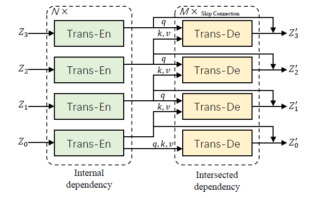
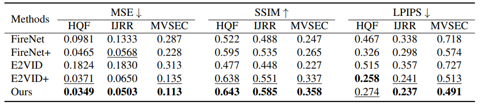

ET-Net: Event-based Video Reconstruction Using Transformer
Event-based Video Reconstruction Using Transformer
利用Transformer对事件相机进行重构。
Abstract：
CNN重构取得了不错的效果，但是卷积的内在的局部结构（intrinsic locality）并不支持建模长时间的依赖，而许多视觉任务需要长时间的重构。在我们的论文中，我们提出了一种混合的CNN-Transformer网络来进行基于事件的视频重构，该网络的优势是能够利用CNN的局部信息与Transformer的全局上下文信息。除此之外，我们进一步提出了一个Token Pyramid Aggregation策略，以实现多尺度的token集成，在token空间中关联内部和交叉的语义概念。
Code：https://github.com/WarranWeng/ET-Net
Contribution：
- 提出了ET-Net，一个新型的CNN-Transformer混合模型
- TPA策略，用于多尺度token融合
- 与CNN对比实验，验证架构有效性
Proposed Method：
网络的总体框架如图1所示，图中（a）表示网络的简略框架，图（b）为网络的具体构成，ET-Net具有U型结构，包括了循环卷积的backbone（RCB），Token金字塔融合（TPA），以及多尺度的上采样。RCB从事件voxel grid中提取了特征金字塔，TPA进一步从特征金字塔中建模内部和交叉的long-range dependency，并输出global context。随后MLU将RCB提取的局部特征与TPA提取的全局上下文特征进行融合，重建出最终的强度帧。
Event Representation：
事件流显然是无法直接输入网络中，需要将其处理为张量。文章延用了E2vid中的Voxel Grid，最早由Alex Zhu提出。给定一段事件流 ，其中 ， 为该段事件总数，设该段事件的时间间隔为，设置 个时间窗口，将事件的时间离散化分配到个时间窗口中，规范化后的时间戳为：，则Voxel Grid编码后的张量 为：
这样做后，时间通道 成为了传统卷积中的通道数，事件流通过Voxel Grid编码为能够用卷积处理的张量。实验中我们设置 。
Recurrent Convolution Backbone（RCB）：
我们不在事件vg上直接执行序列化，而是先feed到RCB结构中去，RCB包含一个head和三个卷积block，head把 转化为初始尺寸特征 ，此处设置 .
利用连续帧间的时序一致性有利于事件的重构，在每个Recurrent block中加一个ConvLSTM来增强重构的时序稳定性。除此以外，在每个Reccurrent块中我们使用一个卷积层（步长为2），来进行尺寸减半的下采样。同时，通道数翻倍。因此，三个重叠的r块有三个尺寸的feature map，方程写为：
通过RCB，我们得到了多尺度特征金字塔，然后先后传入token金字塔融合模块（TPA）与多层次上采样模块（MLU）。
Token Pyramid Aggregation（TPA）：
有些基于transformer的重构只有单一尺度的token，比较trash，多尺度聚合goodgood。因此，我们设计了基于Transformer的Token金字塔聚合模块，对RCB提取的特征金字塔进行内部依赖和交叉依赖建模。首先，对RCB提取的特征金字塔中的每个特征进行序列化操作，具体来说，将特征划分进小的patches中去，大小为，我们取P=8，一共有 个patches，然后将这些patches展开成一维，得到序列，然后，我们使用线性投影和正弦位置编码将每个patch映射到一维的embedding token ,方程为：
随后，token序列就被重新表达为token矩阵 ,这样就可以传入Transformer Blocks 本文取D=256，下图为块的具体内容，N个编码，M个解码，有skip connection。对于每个尺度，我们都采用一个Tr块对特征金字塔的内部依赖和相互依赖进行建模。块中堆叠普通Tr编码器，用self-attention提取每个token中的内部依赖性；Tr解码器构建了相邻尺寸的tokens的相互依赖。

注意到key和value向量都是从更低的尺寸feed过来的，query是从当前编码器feed过来的，这种设计赋予了我们的网络学会提取和交换多尺度上下文的能力。
除此之外，我们还加入了残差连接来维持Tr编码器的内部依赖，编码解码通过skip连接得到，融合所有的Z得到hidden token矩阵，。
Multi-Level Upsampler（MLU）：
注意到和具有同样的维度，分辨率与起始分辨率不同，因此我们设计了一个多层次的上采样层来从hidden token矩阵和特征金字塔恢复全分辨率的强度图像 ,其中前者用多尺度特征集捕获long-range依赖，后者提供局部信息，这两种数据流同时具有CNN和Transformer的优势，都用比只使用一种好多了。4.3可以证明。
MLU由三个上采样块和一个尾巴组成，每个上采样块由双线性插值操作后接卷积层构成，上采样因子为2，最大限度缓解对抗效应。在输入到MLU之前，我们将其reshape成三维特征，形式上，上采样块的过程可以表述为：
\begin{equation} \mathbf{f}_{l}^{M L U}=\left\{\begin{array}{c} f_{u p}\left(\mathbf{f}_{l+1}^{M L U}+\mathbf{f}_{l+1}^{R C B}\right), l=0,1,2 \\ \mathbf{f}^{T P A}, l=3 \end{array}\right. \end{equation}
其中表示第l个尺寸上采样后的结果，尾巴是个简单卷积，输入为和之和，输出为重构的强度图像.
Loss Function：
和E2Vid一样用LPIPS和光流，参数设置有所不同，损失如下：
\begin{equation} \mathcal{L}=\sum_{t=0}^{T} \mathcal{L}_{R}^{t}+\lambda_{T C} \sum_{t=L_{0}}^{T} \mathcal{L}_{T C}^{t} \end{equation}
其中T=40，L0=2，λTC=1。
Experiments：
Training datasets：
我们仿照E2vid+中的数据集采集方式，用E2vid中的对象图像与COCO数据集的背景图像相结合，生成候选前景多对象。对每个图像赋予随机轨迹，阈值CTs在0.1到1.5之间按升序选取，其中正负阈值受限制： ，整个训练集共有280个序列，分辨率为，每个序列大约10s。数据增强与E2vid+相仿，在输入事件张量中加入高斯噪声，用于模拟背景噪声，还模拟了一些hot pixel。执行随机裁剪与输入张量的随机翻转，此外，还有E2vid+中的暂停增强。
Testing datasets：
在三个公开数据集上进行测试，HQF，IJRR和MVSEC。用MSE，SSIM，LPIPS三个指标进行评估。优化器使用AdamW，初始学习率为0.0002，对学习率采用指数衰减策略，gamma值为0.99，bs为2，300个epochs，2张Tesla V100。
Comparison with the state-of-the-art methods：
与几个最吊的模型进行了对比试验，用他们公开的预训练模型进行测试，测试的方法与各项参数相同（如灰度归一化和直方图均衡化），实验结果如下表所示：
